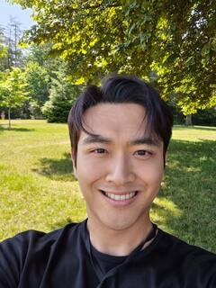

|
Wonjun Jo I am a Ph.D. candidate in the Department of Electrical Engineering at POSTECH. I conduct my research at the Advanced Machine Intelligence (AMI) Lab at KAIST, advised by Prof. Tae-Hyun Oh.
I am passionate about developing Embodied AI agents for real-world applications.
Recently, I am interested in world models for robotics using video data. |
 |
Research |

|
LiDAR-Anchored Collaborative Distillation for Robust 2D Representations
Wonjun Jo, Hyunwoo Ha, Kim Ji-Yeon, Hawook Jeong, Tae-Hyun Oh Under-review Project Page | Paper Improving robustness of self-supervised 2D representation learning. |
|
DarkEQA: Benchmarking Vision-Language Models for Embodied Question Answering in Low-Light Indoor Environments
Yohan Park, Hyunwoo Ha, Wonjun Jo, Tae-Hyun Oh Under-review Project Page | Paper Benchmarking the robustness of Vision-Language Models in low-light environments. |
|
|
Self-Supervised Collaborative Distillation: Enhancing Lighting Robustness and 3D Awareness
Wonjun Jo, Hyunwoo Ha, Kim Ji-Yeon, Hawook Jeong, Tae-Hyun Oh Workshop on Wild3D, ICCV, 2025 Paper Improving pre-trained 2D image encoder's lighting robustness and 3D awareness. |
|
|
The Devil is in the Details: Simple Remedies for Image-to-LiDAR Representation Learning
Wonjun Jo, Kwon Byung-Ki, Kim Ji-Yeon, Hawook Jeong, Kyungdoon Joo, Tae-Hyun Oh ACCV, 2024 Project Page | Paper Proposing simple remedies for self-supervised 3D representation learning with 2D representation. |
Notes |
|
Research Core
Self-Supervised Learning
Multi-Modal Learning
World Models
Embodied AI
|
Music |
|
No Time for Caution Hans Zimmer YouTube |
|
|
Can You Hear The Music Ludwig Goransson YouTube |
|
|
Time Hans Zimmer YouTube |
|
|
We Have to Go Steve Jablonsky YouTube |
|
|
Cloud Atlas End Title Tom Tykwer, MDR Rundfunkchor, MDR Sinfonieorchester YouTube |
|
|
Tears in the Rain Hans Zimmer, Benjamin Wallfisch YouTube |
Photo |
|
ACCV 2024 Date: December 2024 Location: Hanoi, Vietnam ICVSS 2025 Date: July 2025 Location: Sicily, Italy ICCV 2026 Date: October 2026 Location: Honolulu, Hawai'i, USA |


{kind=link}